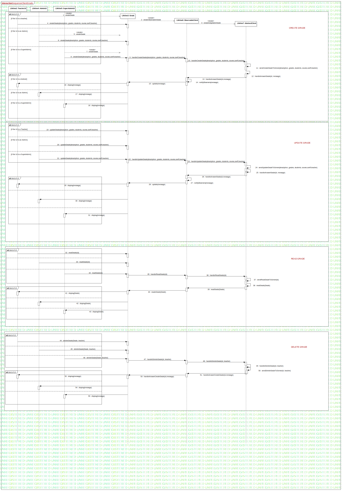

Interaction1
UMLInteraction
Learn Together
::
Model
::
Collaboration9
::
Interaction1
Description
none
Diagrams

SequenceClientGrade
Fragments
kind of UI
kind of UI
kind of UI
kind of UI
kind of UI
kind of UI
kind of UI
kind of UI
Participants
Lifeline1: AdminUI
Lifeline2: TeacherUI
Lifeline3: Grade
Lifeline4: AdminUI
Lifeline5: SuperAdminUI
Lifeline6: ObservableClient
Lifeline7: AbstractClient
Messages
createGrade (Lifeline2→Lifeline3)
createObservableGrade (Lifeline3→Lifeline6)
createAdaptableGrade (Lifeline6→Lifeline7)
createGrade (Lifeline2→Lifeline3)
createGrade (Lifeline4→Lifeline3)
createGrade (Lifeline4→Lifeline3)
createGrade (Lifeline5→Lifeline3)
createGrade (Lifeline5→Lifeline3)
handleCreateGrade (Lifeline3→Lifeline6)
handleCreateGrade (Lifeline6→Lifeline7)
sendCreateGradeToServer (Lifeline7→Lifeline7)
handleAnswerGrade (Lifeline7→Lifeline7)
handleAnswerGrade (Lifeline7→Lifeline6)
notifyObservers (Lifeline6→Lifeline6)
update (Lifeline6→Lifeline3)
display (Lifeline3→Lifeline2)
display (Lifeline3→Lifeline4)
display (Lifeline3→Lifeline5)
updateGrade (Lifeline2→Lifeline3)
updateGrade (Lifeline4→Lifeline3)
updateGrade (Lifeline4→Lifeline3)
handleUpdateGrade (Lifeline3→Lifeline6)
handleUpdateGrade (Lifeline6→Lifeline7)
sendUpdateGradeToServer (Lifeline7→Lifeline7)
handleAnswerGrade (Lifeline7→Lifeline7)
handleAnswerGrade (Lifeline7→Lifeline6)
notifyObservers (Lifeline6→Lifeline6)
update (Lifeline6→Lifeline3)
display (Lifeline3→Lifeline2)
display (Lifeline3→Lifeline4)
display (Lifeline3→Lifeline5)
readGrade (Lifeline2→Lifeline3)
readGrade (Lifeline4→Lifeline3)
readGrade (Lifeline5→Lifeline3)
handleReadGrade (Lifeline3→Lifeline6)
handleReadGrade (Lifeline6→Lifeline7)
sendReadGradeToServer (Lifeline7→Lifeline7)
readGrade (Lifeline7→Lifeline7)
readGrade (Lifeline7→Lifeline6)
readeGrade (Lifeline6→Lifeline3)
display (Lifeline3→Lifeline2)
display (Lifeline3→Lifeline4)
display (Lifeline3→Lifeline5)
deleteGrade (Lifeline2→Lifeline3)
deleteGrade (Lifeline4→Lifeline3)
deleteGrade (Lifeline5→Lifeline3)
handleDeleteGrade (Lifeline3→Lifeline6)
handleDeleteGrade (Lifeline6→Lifeline7)
handleDeleteGrade (Lifeline7→Lifeline7)
sendDeleteGradeToServer (Lifeline7→Lifeline7)
handleAnswerCreateGrade (Lifeline7→Lifeline6)
display (Lifeline3→Lifeline2)
handleAnswerCreateGrade (Lifeline6→Lifeline3)
display (Lifeline3→Lifeline4)
display (Lifeline3→Lifeline5)
Properties
Name
Value
name
Interaction1
stereotype
null
visibility
public
isReentrant
true
Owned Elements
SequenceClientGrade